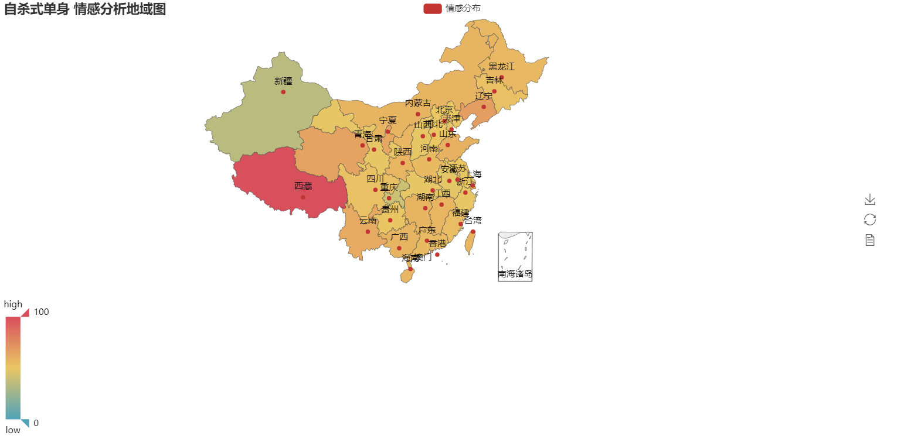

python123学习 https://python123.io/tutorials/weibo_sentiment_anlysis
导读
想要光明正大又不用冒着被封号的危险拿到微博数据么？想要获悉热门微博下网友评论的情感倾向么？想要知道大家都在使用什么表情么？如果你想，恭喜你，你可以在这个教程里找到你想要的一切元素。
你将会通过微博开放平台获取微博数据，并通过 Python 中的情感分析库对热门微博评论进行情感分析进而进行可视化展示，同时你也能统计网友常用表情并进行词云化的展示。快来学习吧！
目录
- 什么是 API，以及为什么要使用它
- 注册微博开放平台
- 获取微博访问权限
- 调用 API 接口获取数据
- 整理所需数据
- 评论内容预处理
- 文本情感分析
- 绘制情感分布图
- 表情统计
什么是 API，以及为什么要使用它
如果你体验过我们的爬虫教程，你一定知道，如果程序要从网页上获取数据（比如微博的评论列表），可以把页面下载下来，再使用选择器和正则表达式一条一条提取数据。
但很多大型网站提供了另外一种更便捷的方式，如果你想要获得评论列表，那就使用程序，直接调用网站提供的 get_weibo_comments 函数，函数就会以固定的格式，把所有评论信息返回给你。
网站提供的 get_weibo_comments 这一类函数，就叫做 API。为了方便使用，通常会将这些函数打包库的形式提供给开发者直接使用。
注册微博开放平台
为了使用新浪微博提供的 API，我们要先注册成为微博开发者：
登录 微博开放平台 并注册一个帐号。
在页面顶部「我的应用」中完成开发者认证。
在页面顶部「微连接->其它」中创建一个 应用。
前往「我的应用->应用信息->基本信息」页面，找到 App Key 和 App Secret。App Key 和 App Secret 可以比作开发者的帐号和密码，不要将它发布到任何公开平台中。
前往「我的应用->应用信息->高级信息」下编辑 OAuth2.0 授权设置，「授权回调页、取消授权回调页」两项都设置为 https://api.weibo.com/oauth2/default.html。
OAuth 2 是一种平台向第三方应用提供服务时的授权方式。和我们使用网站功能需要先登录一样，程序调用网站 API 前也需要先登录。
获取微博访问权限
在终端中输入 pip install weibopy 安装 weibopy 库，weibopy 能够帮助我们方便的调用网站提供的 API。
利用获取到的 App Key 和 App Secret，获取访问 API 的 access_token。
1 | from weibopy import WeiboOauth2, WeiboClient |
Access Token 是为了避免多次调用 API 时需要重复输入用户名和密码的一种设计。
程序登录后获得 Access Token，使用 Access Token 就能在一定时间内免密码使用平台的功能。
调用 API 接口获取数据
微博 API 文档 中描述了所有新浪微博提供的数据接口。
下面是获取某条微博下的评论的过程：
首先在 API 文档页面找到「获取某条微博的评论列表」这个 API，名称为 comments/show。
接下来就可以使用这样的方式调用 API：
1 | # token 是刚刚获得的 token，可以一直使用 |
必须的参数只有 id，即需要查询的微博 id。
微博 id 很容易获得，只要打开一条微博，查看页面的 URL，比如 https://m.weibo.cn/detail/4321877356979717，后面的那串数字就是这条微博的 id。
如果没有发生意外，上面的代码将获取到 id 为 4318237070487349 的微博的前 200 条评论内容，并且已经存储为字典形式。
整理所需数据
阅读 API 文档中可以发现，comments/show 除了返回评论本身外，还返回了许多额外的数据。有了这些数据，你能够创造更多玩法。
评论信息：
创建时间、内容、来源
评论者信息：用户昵称、性别、注册时间
- 用户的省市信息
- 用户个人描述、博客地址、头像、域名
- 用户的粉丝数、关注数、微博数、收藏数
下面我们将结合 评论的内容的情感倾向 和 评论者的地理位置 这两个维度数据，进行整理和可视化展示。
评论内容预处理
首先，评论包含一些对情感分析无用的干扰内容，比如：1
回复@某某某：
利用正则表达式去除上述的干扰内容：1
2 # 替换为空字符串
text = re.sub('回复.*?:', '', str(comment['text']))
接下来，按地域划分评论内容。
使用 collections 中的 defaultdict 模块生成字典列表。将各省份的评论列表存入字典中。（字典的键为省份的 id，值为各省评论的列表）1
2
3
4
5
6
7
8
9
10
11
12
13
14
15
16
17
18
19
20
21
22
23from collections import defaultdict
import time
province_list = defaultdict(list) # 保存按省划分的评论正文
comment_text_list = [] # 保存所有评论正文
# 获取「自杀式单身」评论列表
# 共获取 10 页 * 每页最多 200 条评论
for i in range(1, 11):
result = client.get(suffix='comments/show.json', params={'id': 4322140368509204, 'count': 200, 'page': i})
comments = result['comments']
if not len(comments):
break
for comment in comments:
text = re.sub('回复.*?:', '', str(comment['text']))
province = comment['user']['province']
province_list[province].append(text)
comment_text_list.append(text)
print('已抓取评论 {} 条'.format(len(comment_text_list)))
time.sleep(1)
文本情感分析
在控制台安装 snownlp：pip install snownlp
使用 snownlp 库可以对文本进行情感分析，它会对每个文本生成一个 0-1 的得分，数值越大，是积极情绪的概率越高。
情感分析的原理其实很简单：提取一句话中的一些关键词，判断每个关键词对应情感为积极的概率，最后取最大值。
对各省的评论进行情感分析，并统计积极情绪所占的比例，以便绘制地图。
由于我们获取的为省份 id 。需要将其转换为对应名称以便绘图。需访问 相应 API 获取 id 和 名称的映射：
1 | # 获取省份列表 |
接下来就可以开始做情感分析了：1
2
3
4
5
6
7
8
9
10
11
12
13
14
15
16
17# 评论情感分析
positives = {}
for province_code, comments in province_list.items():
sentiment_list = []
for text in comments:
s = SnowNLP(text)
sentiment_list.append(s.sentiments)
# 统计平均情感
positive_number = sum(sentiment_list)
positive = positive_number / len(sentiment_list) * 100
# 按省保存数据, 0010 为国家前缀
province_code = '0010' + str(province_code)
if province_code in provinces:
provice_name = provinces[province_code]
positives[provice_name] = int(positive)
绘制情感分布图
在控制台安装 pyecharts 以及中国地图组件：1
2
3
4
5
6pip install pyecharts
pip install echarts-countries-pypkg
pip install echarts-china-provinces-pypkg
# 可选
pip install pyecharts-snapshot
绘制地图也非常简单：1
2
3
4
5
6# 绘制情感分布图
keys = list(positives.keys())
values = list(positives.values())
map = Map("自杀式单身 情感分析地域图", width=1200, height=600)
map.add("积极情感", keys, values, visual_range=[0, 100], maptype='china', is_visualmap=True, is_label_show=True, visual_text_color='#000')
map.render(path="单身热评分布.html")

表情统计
观察表情格式，进行正则匹配。同时使用 collections 中的 Counter 进行统计。代码如下:1
2
3
4
5
6
7
8
9
10
11
12from collection import Counter
# 获取评论中出现的表情
emoji_list = []
for comment in comment_text_list:
emojis = re.findall(re.compile(u'(\[.*?\])', re.S), comment)
if emojis:
for emoji in emojis:
emoji_list.append(emoji)
emoji_dict = Counter(emoji_list)
print(emoji_dict)